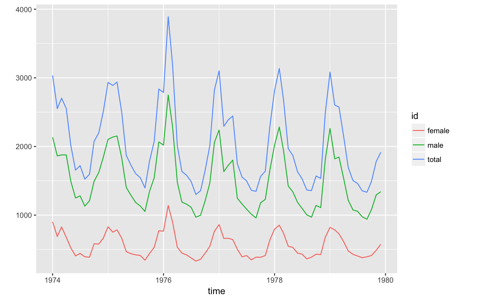
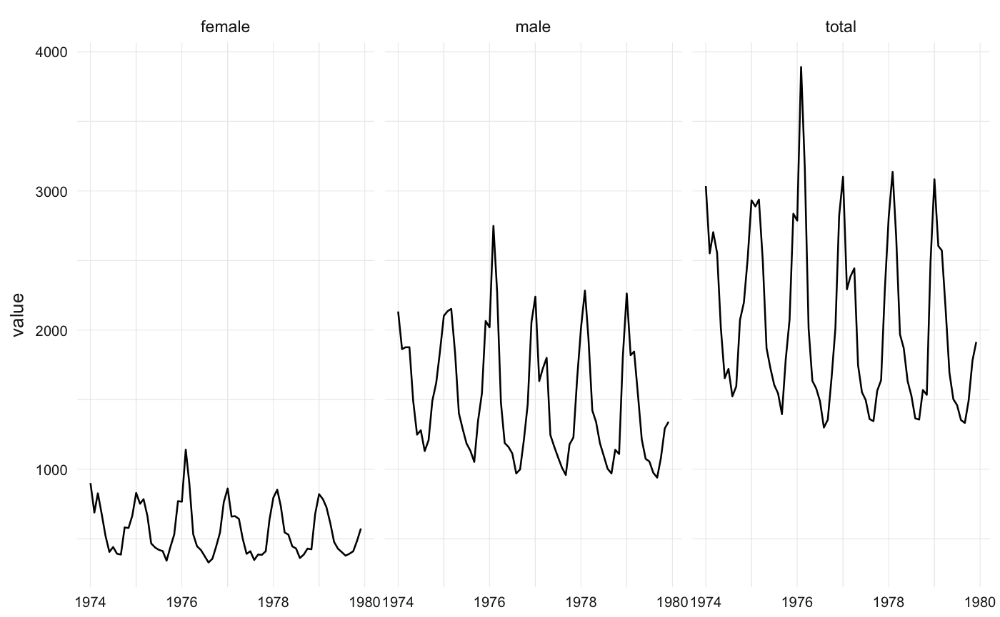
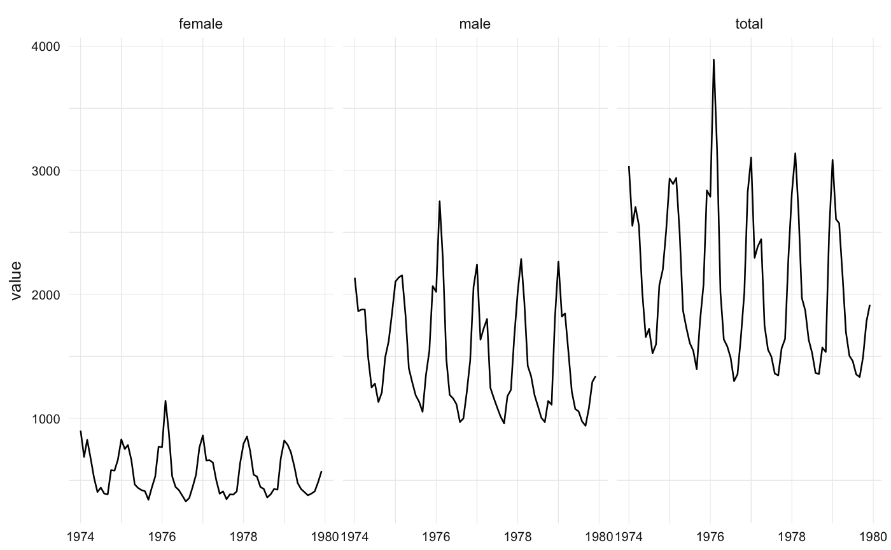

ts_ggplot() has the same syntax and produces a similar plot as ts_plot(),
but uses the ggplot2 graphic system, and
can be customized. With theme_tsbox() and scale_color_tsbox(), the output
of ts_ggplot has a similar look and feel.
ts_ggplot(..., title, subtitle, ylab = "")
theme_tsbox(base_family = getOption("ts_font", ""), base_size = 12)
colors_tsbox()
scale_color_tsbox(...)
scale_fill_tsbox(...)Arguments
- ...
ts-boxable time series, objects of class
ts,xts,data.frame,data.table, ortibble. Forscale_functions, arguments passed to subfunctions.- title
title (optional)
- subtitle
subtitle (optional)
- ylab
ylab (optional)
- base_family
base font family (can also be set via
options)- base_size
base font size
Details
Both ts_plot() and ts_ggplot() combine multiple ID dimensions into a
single dimension. To plot multiple dimensions in different shapes, facets,
etc., use standard ggplot (see examples).
See also
ts_plot(), for a simpler and faster plotting function.
ts_dygraphs(), for interactive time series plots.
Examples
# \donttest{
# using the ggplot2 graphic system
p <- ts_ggplot(total = ldeaths, female = fdeaths, male = mdeaths)
p

# with themes for the look and feel of ts_plot()
p + theme_tsbox() + scale_color_tsbox()
 # also use themes with standard ggplot
suppressMessages(library(ggplot2))
df <- ts_df(ts_c(total = ldeaths, female = fdeaths, male = mdeaths))
ggplot(df, aes(x = time, y = value)) +
facet_wrap("id") +
geom_line() +
theme_tsbox() +
scale_color_tsbox()

# }
if (FALSE) {
library(dataseries)
dta <- ds(c("GDP.PBRTT.A.R", "CCI.CCIIR"), "xts")
ts_ggplot(ts_scale(ts_span(
ts_c(
`GDP Growth` = ts_pc(dta[, "GDP.PBRTT.A.R"]),
`Consumer Sentiment Index` = dta[, "CCI.CCIIR"]
),
start = "1995-01-01"
))) +
ggplot2::ggtitle("GDP and Consumer Sentiment", subtitle = "normalized") +
theme_tsbox() +
scale_color_tsbox()
}
# also use themes with standard ggplot
suppressMessages(library(ggplot2))
df <- ts_df(ts_c(total = ldeaths, female = fdeaths, male = mdeaths))
ggplot(df, aes(x = time, y = value)) +
facet_wrap("id") +
geom_line() +
theme_tsbox() +
scale_color_tsbox()

# }
if (FALSE) {
library(dataseries)
dta <- ds(c("GDP.PBRTT.A.R", "CCI.CCIIR"), "xts")
ts_ggplot(ts_scale(ts_span(
ts_c(
`GDP Growth` = ts_pc(dta[, "GDP.PBRTT.A.R"]),
`Consumer Sentiment Index` = dta[, "CCI.CCIIR"]
),
start = "1995-01-01"
))) +
ggplot2::ggtitle("GDP and Consumer Sentiment", subtitle = "normalized") +
theme_tsbox() +
scale_color_tsbox()
}